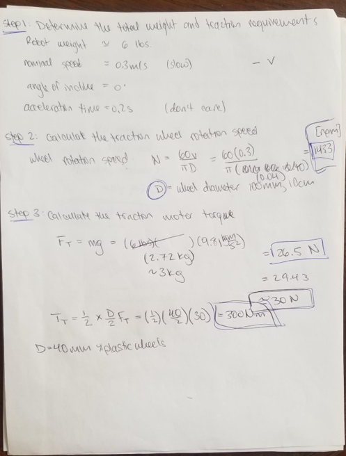
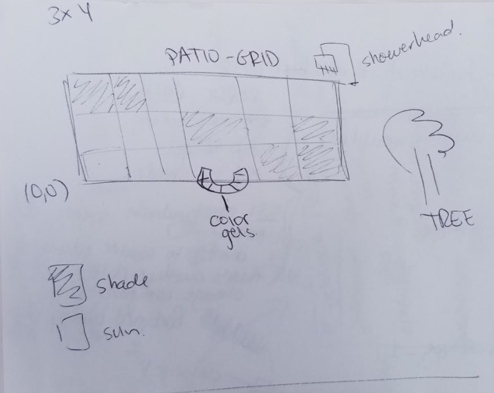
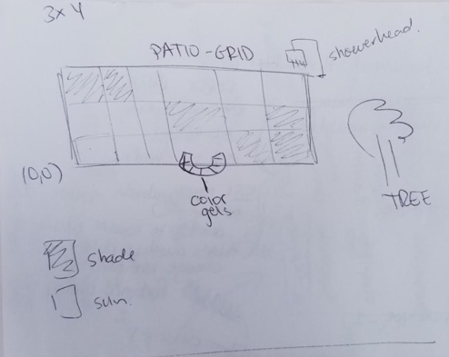

FINAL PROJECT DETAILS - PLANS AND PROTOTYPES
PROJECT PLAN
BILL OF MATERIALS
ESSENTIAL MATERIALS- Gear motor (#3711 488:1 Metal Gearmotor 20Dx46L mm 6V CB) [Quantity: 2]
- Motor Brackets (#1138 Pololu 20D mm Metal Gearmotor Bracket Pair)
- Motor encoder (#3499 Magnetic Encoder Pair Kit for 20D mm Metal Gearmotors, 20 CPR, 2.7-18V)
- Motor Controller (#1112 Pololu Qik 2s12v10 Dual Serial Motor Controller)
- Motor Controller (#1110 Pololu Qik 2s9v1 Dual Serial Motor Controller)
- AA Batteries (1.5V each) [Quantity: 2]
- Flower Pot Platform
- Micro Motor (#3070 1000:1 Micro Metal Gearmotor HPCB 6V)
- Motor Brackets (#1086 Pololu Micro Metal Gearmotor Bracket Pair - White)
- Micro Motor encoder (#4760 Magnetic Encoder Pair Kit with Top-Entry Connector for Micro Metal Gearmotors, 12 CPR, 2.7-18V)
- Wheels (Pololu Multi-Hub Wheel w/Inserts for 3mm and 4mm Shafts - 80×10mm, Black, 2-Pack) [Quantity: 2]
** Second pot **
- Colored panels
- Battery Box
- Huzzah Board [Quantity: 2]
- Huzzah Board [Quantity: 1]
- Ultrasonic sensors [Quantity: 2]
- Caster Wheel [Quantity: 4]
- Flower Plant Platform [Quantity: 1]
- Kinect [Quantity: 1]
- Photoresistor [Quantity: 2]
- Motor controller
- Light sensor ***
- Encoder
CACLCULATING DESIGN SPECIFICATOINS
Choosing a motor:Calculating necessary torque 
MIN DESIGN: MINIMUM VIABLE DESIGN
In this design we are concerned with the platform moving around the patio. The platform will hold a pot with plants. The pot will have a photosensor to detect sun and shade. The pot will move in a random or pre-determined path until it finds shade. The device will move in a pre-determined loop. Meaning it will travel a certain amount and then turn. We will use encoders to determine how much it has traveled. This seems like the easiest trajectory planning scheme. However, simply using encoders to measure distance leads to errors that build up over time making this approach not very accurate. (How accurate? ... I am not sure). Another plant will move around but will not have direct communication with the other plant. It will simply detect it as an obstacle and avoid it. We will use wifi for the central controller to communicate with each of the plants. We will use Google Firebase for the communication. We will want to communicate time and weather information to the platforms. Time is important because the plants will only need to move after being exposed to sun for x amount of hours in the day. For example, by 10 am in the summer, the plants have been exposed to sun for 4 hours. At this time, it can determine if it has gotten to much sun. THis is where weather information is important. If it has been a cloudy day, the plant will not need to move. But if it has been a sunny day, the plant will now need to find shade. We will use APIs for time and weather. Wifi is also useful to manually control the platforms. We will include buttons to move the platform forward, back, left and right.
MAX DESIGN: ALL THE BELLS AND WHISTLES
If time permits and I am able to complete the above. I would like to add the following tidbits. What interests me the most is to gain experience using wifi communication, using APIs, communication between devices. Increasing the complexity of how the robots move around the patio incorporates all of these. I have yet to determine how the device will determine its absolute position in order to make a decision of where to go next. Ideas include, using a kinect to detect the device and communicate to the device where it is located on a grid; using QR codes to determine the position of the robot; double check a device's position by sharing positions with the other device. More ideas are welcome at this point! Color gels will be either installed in the garden or in the pot. If it is installed in the garden, then a device can go to the shaded area for shade. If it is installed in the pot, the pot can rotate until the shade panels are blocking the flowers from the sun. Shower heads dispense water that can quench a plants dry dirt. This may be the cure for a plant who has been sitting in the sun instad of some shade. The shower head will be installed at a fixed position in the patio which the platform will know. The platform can visit the shower head when it has gotten too much sun on a very sunny day (as per the weather API). When it reaches the shower head, it will communicate with it and the shower will dispense water.PROTOTYPES
Spiral developing approach. Description here...PROTOTYPE # 1
How the device will move around in the patio is still an idea in progress. There are a couple of floating ideas. I present them here from easiest to most difficult to implement. The patio space that the devices will be navigating in is shown in the picturebelow. 
PROOF OF CONCEPT

PROOF OF CONCEPT This goal of the first protoype is to demonstrate that the different aspects of the design work individually. The different aspects include:
1. Sizing: do all the components fit within the constraints of the platform size?
2. Sensing: does the photosensing components have enough resolution to detect the difference between "sun" and "shade"?
I measured the difference in resistance when the photoresistor is in the sun versus when the photoresistor is in the shade.
 There was a 2Kohm difference in resistance. However, that got me thinking. In my code, I won't be able to program an absoute signal value to respresent "sun" and "shade". The sun intensity on a given day will vary and I don't want to calibrate the device every day. Instead, the logic will be that on a sunny day, after X hours of sun exposure, the value of sun intensity of the X hours will be taken as the reference. This value will be considered "sun". The device will then move to an area of "shade" which will be designated as a spot where there is at least a 2Kohm difference in resistance.
There was a 2Kohm difference in resistance. However, that got me thinking. In my code, I won't be able to program an absoute signal value to respresent "sun" and "shade". The sun intensity on a given day will vary and I don't want to calibrate the device every day. Instead, the logic will be that on a sunny day, after X hours of sun exposure, the value of sun intensity of the X hours will be taken as the reference. This value will be considered "sun". The device will then move to an area of "shade" which will be designated as a spot where there is at least a 2Kohm difference in resistance. Woops! These are phototransistors not photoresistors. Check out the difference here . In order for the phototransistor to work for our purpose, we need it to be highly senesitive to small changes in light. This is because even in the shade, there can be lots of light and the difference in light intensity between "sun" and "shade" is not always evident. A phototransitor produces changes in current depending on light intensity.
 Knowing that Vout = IR, we can make the following conclusion: if R is BIG, a small change in I will produce a large change in Vout; if R is small, a small change in I leads to a smaller change in Vout. Therefore, having a higher resistance increases the sensitivity of our sensor.
3. Crash sensing: does the ultrasonic sensor detect a possible crash? What can we detect (i.e., obstacle size and positioning)
Knowing that Vout = IR, we can make the following conclusion: if R is BIG, a small change in I will produce a large change in Vout; if R is small, a small change in I leads to a smaller change in Vout. Therefore, having a higher resistance increases the sensitivity of our sensor.
3. Crash sensing: does the ultrasonic sensor detect a possible crash? What can we detect (i.e., obstacle size and positioning) I will use ultrasonic sensors to detect when an object is a certain distance away from the device. When it is within the acceptable distance, the device will be instructed to move in another direction to avoid crashing into it. Depending on the speed that the device moves, I will determine what an acceptable distance is. I followed this tutorial here to make sure the supersonic sensors would work for this purpose. I used and ItsyBitsy instead of the Arduino Uno. I just had to change the wiring and make sure to make the appropriate changes in the code.
 %%%%% Include GIF here.
%%%%% Include GIF here. Download code for ultra sonic sensor HERE!
Next, I need to test the field of view of the sensor to determine what we will be able to sense in terms of size and positioning relative to the device. The sensor can detect up to 200 cm away. Here I have listed common items in the patio. I placed the sensor at 10 cm off the ground to emmulate where the sensor would be placed on the platform. I placed it infornt of the common patio items in different positions relative to the item. I placed checks for events that were successful. We will continue to work with the ultrasonic sensor but are aware that for better collision detection, another sensor should be used.
 The only limitation is the sensors field of view. It cna detect objects directly infront of the sensors but it cannot detect an object further than 1cm to the left, right, above, or below it. Here are test results.
The only limitation is the sensors field of view. It cna detect objects directly infront of the sensors but it cannot detect an object further than 1cm to the left, right, above, or below it. Here are test results.

4. Movement: do the motors provide enough torque to move the device?
Motors are being shipped. No tests were able to be done. However, see above for motor shaft torque required to move a 6Kg load.
Instead of buying motor controllers, we can use the H-bridge motor driver provided to use. We completed the following module to make sure we have a working motoro driver. This driver or the controller listed above above will work for this project.
5. Steering: do we have the means to determine absolute position, orientation, or borders of a map, in which we can instruct the device to move within the patio area?
I am thinking that I may be able to leverage the kinect to determine the position of the device.
6. Part integration: can all the parts not only fit but also be secured on the device? Placement of output and input devices and ccontrollers.
Here is a CAD drawing with rough but appropriate dimensions of all components to get an idea if all the components will fit.
A more in detailed schematic of the electronics will be available soon. For now, we estimate a size that will incorporate a Huzzah ESP32 microncontroller, circuitry for the photoresistor, ultrasonic sensor, encoders, and motor drivers.